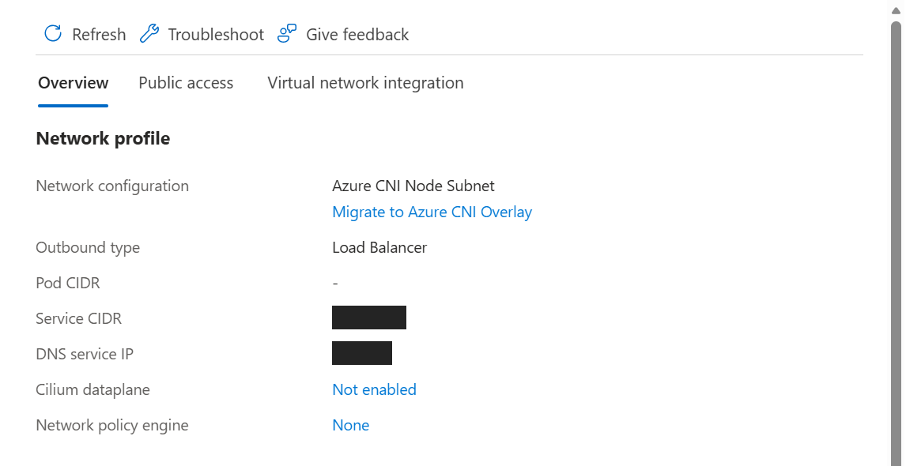

이 문서는 2026년 5월 21일 미국 동부 2에서 기록한 검증 보고서를 번역한 것입니다. 실험은 Kubernetes 1.34.7과 Standard_B2s VM을 사용하는 2노드 Azure CNI Overlay 클러스터에서 수행되었습니다. 모든 환경 식별자와 관찰된 주소는 제거했습니다. 아래 시간은 해당 단일 실험의 과거 관찰값이지 프로덕션 가용성을 약속하는 수치가 아닙니다.
1. 정책 엔진 선택 및 마이그레이션 위험 이해
| 영역 | Cilium | Calico | Azure NPM |
|---|---|---|---|
| 데이터 플레인/정책 모델 | 커널 eBPF 데이터 플레인 | Azure CNI 위의 정책 계층 | iptables 기반 정책 |
| Overlay | 원본에서 권장하는 네이티브 경로 | 조합 제약 확인 필요 | 조합 제약 확인 필요 |
| none에서 현재 위치 전환 | 문서화된 az aks update 경로 | 원본은 네트워킹 구성에 따라 지원되는 업데이트 경로를 제시합니다. | 원본 비교에는 none에서 NPM으로 전환하는 경로가 없습니다. |
| 고급 제어 | Cilium 정책으로 FQDN 및 L7 제어를 표현할 수 있습니다. AKS 관리형 기능과 지원 범위를 검증하세요. | 일반적인 AKS 비교 범위는 L3/L4입니다. | L3/L4 |
| 흐름 관찰 가능성 | 활성화 및 지원되는 경우 Hubble 생태계 | 별도 관찰 기능 필요 | 이 보고서에는 동등한 기능이 포함되지 않음 |
| Windows | Linux 절차가 Windows 풀을 지원한다고 가정하지 마세요. | 원본은 Linux 전용 정책 지원으로 설명합니다. | 사용 중지/지원 제약 적용 |
원본은 Overlay를 유지하면서 표준 NetworkPolicy 적용을 실효성 있게 만들기 위해 Cilium을 권장하며 Azure NPM Linux의 사용 중지일을 2028년 9월 30일, Windows의 사용 중지 시기를 2026년 9월로 인용합니다. 이 날짜와 플랫폼 지원은 원본 작성 당시의 현황입니다. 최신 Microsoft 수명 주기 안내를 확인하세요. 업스트림 Cilium 기능이 모든 AKS 관리형 구성에서 모든 기능을 사용할 수 있다는 뜻은 아닙니다.
이 전환은 무중단 전환이 아닙니다. 노드가 순차적으로 교체되고 Pod가 퇴거되며 원본은 Cilium에서 Azure 데이터 플레인으로의 현재 위치 롤백을 사용할 수 없다고 명시합니다. 대표성 있는 스테이징 클러스터에서 테스트하고 구성을 백업하며 필요한 경우 다른 클러스터를 통한 복구를 계획하세요.
2. 프로덕션 준비 상태 사전 점검
마이그레이션을 계획하기 전에 실제 네트워크 프로필 확인하기

iptables -L -n으로 사용자 지정 노드 iptables 규칙을 조사하세요. eBPF 데이터 경로 동작은 이 규칙이 전제한 조건을 우회할 수 있습니다. 필요한 제어를 지원되는 정책으로 옮기고 트래픽을 검증하세요.- NodePort/LoadBalancer Service의
externalTrafficPolicy: Local을 점검하고 kube-proxy 교체 후 원본 IP 보존을 테스트하세요. nodeProvisioningProfile을 확인하세요. 보고서는 Node Auto-Provisioning이 활성화된 상태에서는 데이터 플레인 변경이 차단된다고 설명합니다. 지원 절차에 따라 비활성화, 전환, 재활성화를 계획하세요.- cilium-agent를 위한 노드 여유 용량을 확보하세요. 보고서는 노드당 CPU 약 100m, 메모리 200Mi를 운영 추정치로 제시하며 보장된 요청량이나 제한값은 아닙니다.
- PDB, 애플리케이션 복제본, 서지 용량, 드레인 동작, 준비 상태, Pod 분산을 검토하세요. 복제본 2개 이상과 충족 가능한 중단 예산이 단일 복제본 실험보다 안전합니다.
- 실제 업데이트는 승인된 유지 관리 시간에 예약하세요. AKS 유지 관리 정책만 설정하면 수동으로 시작한 명령이 지연된다고 가정해서는 안 됩니다.
- 정책 및 흐름 관찰 기능을 준비하세요. Hubble 가용성을 확인해야 합니다. 아래 릴레이 쿼리는 릴레이를 감지할 뿐 설치하거나 활성화하지 않습니다.
export RESOURCE_GROUP="YOUR_RESOURCE_GROUP"
export CLUSTER="YOUR_CLUSTER"
az aks show -g "$RESOURCE_GROUP" -n "$CLUSTER" --query nodeProvisioningProfile
kubectl get svc -A -o yaml | grep externalTrafficPolicy
kubectl top nodes
kubectl get pdb -A
kubectl get pods -n kube-system -l k8s-app=hubble-relay3. 정책 없는 기준선 구축
다음은 폐기 가능한 실험 환경이며 프로덕션 클러스터를 다시 만들라는 지침이 아닙니다. 초기 프로필에는 networkDataplane=azure, networkPlugin=azure, networkPluginMode=overlay, networkPolicy=none이 표시되어야 합니다.
az aks create --resource-group "$RESOURCE_GROUP" --name "$CLUSTER" \
--location eastus2 --node-count 2 --node-vm-size Standard_B2s \
--network-plugin azure --network-plugin-mode overlay --network-policy none \
--enable-managed-identity --generate-ssh-keys
az aks get-credentials -g "$RESOURCE_GROUP" -n "$CLUSTER"
kubectl create namespace netpol-test
az aks show -g "$RESOURCE_GROUP" -n "$CLUSTER" --query networkProfile
kubectl get nodes2계층 애플리케이션 배포
백엔드 Deployment와 Service를 backend.yaml로, 프런트엔드를 frontend.yaml로 저장하세요. 이는 본문 예시이며 추가 원본 다운로드가 아닙니다. 위의 네임스페이스 생성은 보고서의 배포 블록에서 빠진 단계를 보충합니다.
apiVersion: apps/v1
kind: Deployment
metadata:
name: backend
namespace: netpol-test
spec:
replicas: 1
selector:
matchLabels: {app: backend}
template:
metadata:
labels: {app: backend}
spec:
containers:
- name: backend
image: nginx:1.25-alpine
ports:
- containerPort: 80
---
apiVersion: v1
kind: Service
metadata:
name: backend
namespace: netpol-test
spec:
selector: {app: backend}
ports:
- protocol: TCP
port: 80
targetPort: 80
---
apiVersion: apps/v1
kind: Deployment
metadata:
name: frontend
namespace: netpol-test
spec:
replicas: 1
selector:
matchLabels: {app: frontend}
template:
metadata:
labels: {app: frontend}
spec:
containers:
- name: frontend
image: curlimages/curl:8.8.0
command: ["/bin/sh", "-c", "sleep 36000"]kubectl -n netpol-test exec deploy/frontend -- \
sh -c "curl -s -o /dev/null -w '%{http_code}' http://backend"
# Recorded outcome: exit code 0, HTTP 200.정책 적용이 없는 상태에서는 같은 네임스페이스 내 트래픽이 성공했습니다. 이미지 버전은 테스트 당시 값을 유지했으며 재사용 전에 보안과 가용성을 검토해야 합니다.
4. 전환 및 가용성 모니터링
az aks update --resource-group "$RESOURCE_GROUP" --name "$CLUSTER" \
--network-dataplane cilium --network-policy cilium
az aks show -g "$RESOURCE_GROUP" -n "$CLUSTER" \
--query '{dataplane:networkProfile.networkDataplane,policy:networkProfile.networkPolicy,state:provisioningState}'
kubectl get nodes
kubectl -n netpol-test get pods -o wide
kubectl -n netpol-test exec deploy/frontend -- \
sh -c "curl -s -o /dev/null -w '%{http_code}' http://backend"업데이트가 실행되는 동안 두 번째 터미널에서 약 10초마다 노드 준비 상태와 프런트엔드에서 백엔드로의 요청을 샘플링하세요. 보고서는 Kubernetes exec 기반 프로브를 사용했습니다. EXEC_FAIL이 1회 기록되었으며 이는 Pod 퇴거나 exec 실패를 포함할 수 있으므로 애플리케이션이 정확히 11초 동안 중단되었다는 증거는 아닙니다.
| 2026년 5월 21일 UTC 시각 | 관찰된 이벤트 |
|---|---|
| 04:50:19 | 시작. Ready 노드 2개, curl 200 |
| 04:53:17 | 세 번째 노드 추가, 처음에는 NotReady. 요청은 계속 200 |
| 04:54:31 | 새 노드 Ready |
| 04:55:34 | 이전 노드 SchedulingDisabled. EXEC_FAIL 1회 |
| 04:55:45 | 약 11초 뒤 다음 기록된 요청은 200 |
| 04:56:48 | 첫 번째 교체 완료, Ready 노드 2개 |
| 04:58:54 | 두 번째 교체 시작 |
| 05:00:12 | 두 번째 교체 노드 Ready 도달 |
| 05:08:39 | ProvisioningState=Succeeded. 총 18분 20초 |
관찰된 교체 순서는 maxSurge 방식이었습니다. 새 노드를 추가하고 이전 노드를 스케줄링 불가로 만든 뒤 드레인하고 이전 노드를 삭제한 다음 반복했습니다. 동시 재이미징이 아니었습니다. 최종 networkDataplane과 networkPolicy는 모두 cilium이었습니다. 두 노드와 워크로드 모두 Ready/Running 상태였고 업데이트 후 요청은 종료 코드 0, HTTP 200을 반환했습니다.
5. 백엔드를 별도 네임스페이스로 이동
위 YAML에서 백엔드만 복사하여 두 리소스 모두에 metadata.namespace: backend-ns를 설정하세요. -n 플래그는 매니페스트에 적힌 충돌하는 네임스페이스를 덮어쓰지 않습니다. 이 테스트의 백엔드 이동은 의도적으로 중단을 유발합니다.
kubectl create namespace backend-ns
kubectl -n netpol-test delete deployment backend
kubectl -n netpol-test delete service backend
# backend.yaml must now contain only the backend resources with namespace backend-ns.
kubectl -n backend-ns apply -f backend.yaml
kubectl -n netpol-test exec deploy/frontend -- \
sh -c "curl -s -o /dev/null -w '%{http_code}' http://backend.backend-ns.svc.cluster.local"
# Recorded: exit code 0, HTTP 200.Cilium 설치만으로 모든 트래픽이 기본 거부되지는 않습니다. 정책으로 워크로드를 선택하기 전에는 네임스페이스 간 트래픽이 계속 허용되었습니다.
6. DNS를 제외한 송신 차단
apiVersion: networking.k8s.io/v1
kind: NetworkPolicy
metadata:
name: deny-all-egress
namespace: netpol-test
spec:
podSelector: {}
policyTypes: [Egress]
---
apiVersion: networking.k8s.io/v1
kind: NetworkPolicy
metadata:
name: allow-dns-egress
namespace: netpol-test
spec:
podSelector: {}
policyTypes: [Egress]
egress:
- to:
- namespaceSelector:
matchLabels:
kubernetes.io/metadata.name: kube-system
podSelector:
matchLabels:
k8s-app: kube-dns
ports:
- protocol: UDP
port: 53
- protocol: TCP
port: 53namespaceSelector와 podSelector는 같은 피어 항목 안에 있으므로 둘 다 일치해야 합니다. UDP 및 TCP DNS가 허용됩니다. 정책은 허용 범위가 합산됩니다. DNS 허용 정책은 다른 송신이 격리된 Pod에 허용되는 송신을 추가합니다.
kubectl -n netpol-test exec deploy/frontend -- \
sh -c "curl -sS --connect-timeout 5 -m 8 -o /dev/null -w '%{http_code}' http://backend.backend-ns.svc.cluster.local"
# Recorded: curl exit code 28; connection timed out after about 5002 ms.7. 프런트엔드만 백엔드에 접근하도록 허용
apiVersion: networking.k8s.io/v1
kind: NetworkPolicy
metadata:
name: allow-frontend-to-backend
namespace: netpol-test
spec:
podSelector:
matchLabels: {app: frontend}
policyTypes: [Egress]
egress:
- to:
- namespaceSelector:
matchLabels:
kubernetes.io/metadata.name: backend-ns
podSelector:
matchLabels: {app: backend}
ports:
- protocol: TCP
port: 80
---
apiVersion: apps/v1
kind: Deployment
metadata:
name: other
namespace: netpol-test
spec:
replicas: 1
selector:
matchLabels: {app: other}
template:
metadata:
labels: {app: other}
spec:
containers:
- name: other
image: curlimages/curl:8.8.0
command: ["/bin/sh", "-c", "sleep 36000"]for APP in frontend other; do
kubectl -n netpol-test exec "deploy/$APP" -- \
sh -c "curl -sS --connect-timeout 5 -m 8 -o /dev/null -w '%{http_code}' http://backend.backend-ns.svc.cluster.local"
done| 호출자 | 기록된 결과 | 해석 |
|---|---|---|
| frontend | 종료 0, HTTP 200 | 레이블 범위 예외가 작동함 |
| other | 종료 28, 약 5001 ms 후 시간 초과 | 다른 워크로드는 DNS를 제외하고 계속 격리됨 |
8. Cilium 전용 운영 예시
표준 NetworkPolicy는 L3/L4 주소와 포트를 다룹니다. CiliumNetworkPolicy는 Cilium 전용 선택자와 지원되는 경우 특정 HTTP 메서드나 경로만 허용하는 등의 FQDN 및 L7 제어를 추가합니다. 다음 예시는 원본의 각 정책 패턴을 재현합니다. 아래 사설 CIDR은 예시용 RFC1918 범위이며 실험 환경의 주소가 아닙니다. 승인된 서브넷 또는 엔드포인트로 바꾸세요.
Application Gateway 서브넷에서 프런트엔드로
apiVersion: cilium.io/v2
kind: CiliumNetworkPolicy
metadata:
name: allow-ingress-from-appgw
namespace: demo1
spec:
endpointSelector:
matchLabels: {app: frontend}
ingress:
- fromCIDR:
- 10.100.2.0/24 # Illustrative Application Gateway subnet, not a real environment value.
toPorts:
- ports:
- port: "8080"
protocol: TCP네임스페이스를 넘어 서비스 계층으로 송신
apiVersion: cilium.io/v2
kind: CiliumNetworkPolicy
metadata:
name: allow-egress-to-demo2
namespace: demo1
spec:
endpointSelector:
matchLabels: {app: frontend}
egress:
- toEndpoints:
- matchLabels:
k8s:io.kubernetes.pod.namespace: demo2
toPorts:
- ports:
- port: "8080"
protocol: TCPCoreDNS 접근
apiVersion: cilium.io/v2
kind: CiliumNetworkPolicy
metadata:
name: allow-dns
namespace: demo1
spec:
endpointSelector: {}
egress:
- toEndpoints:
- matchLabels:
k8s:io.kubernetes.pod.namespace: kube-system
k8s-app: kube-dns
toPorts:
- ports:
- port: "53"
protocol: UDP
- port: "53"
protocol: TCPFQDN을 통한 외부 API
apiVersion: cilium.io/v2
kind: CiliumNetworkPolicy
metadata:
name: allow-egress-google-api
namespace: demo1
spec:
endpointSelector:
matchLabels: {app: backend-api}
egress:
- toFQDNs:
- matchPattern: "*.googleapis.com"
- matchPattern: "*.google.com"
toPorts:
- ports:
- port: "443"
protocol: TCP원본 DNS 예시는 포트 53만 허용하며 FQDN 정책 상태를 채우는 데 사용되는 DNS 프록시/관찰 규칙을 보여 주지 않습니다. DNS 전송을 허용하기만 하면 FQDN 블록이 작동한다고 가정하지 마세요. AKS/Cilium 지원, DNS 가시성, 필요한 DNS L7 규칙을 확인한 뒤 확인된 주소와 드롭된 흐름을 검증하세요. 와일드카드가 접두사 없는 최상위 도메인까지 반드시 일치시키는 것은 아닙니다.
MySQL 프라이빗 엔드포인트
apiVersion: cilium.io/v2
kind: CiliumNetworkPolicy
metadata:
name: allow-egress-mysql-pe
namespace: demo1
spec:
endpointSelector:
matchLabels: {app: backend-api}
egress:
- toCIDR:
- 10.200.1.5/32 # Illustrative private endpoint only; replace before use.
toPorts:
- ports:
- port: "3306"
protocol: TCP9. 단계적 적용 및 문제 해결
- 데이터 플레인 전환을 완료하고 provisioningState=Succeeded를 확인하세요.
- 제한적인 정책을 적용하기 전에 기존 서비스를 검증하세요.
- 명시적으로 선택한 워크로드에 수신 허용 정책을 적용하세요. 선택한 방향의 수신이 격리됩니다. 별도 전체 수신 거부 정책이 항상 필요한 것은 아닙니다.
- 송신을 단계적으로 강화하세요. 전체 거부, DNS, 네임스페이스/레이블로 선택한 서비스, 지원되는 FQDN 기반 외부 API, IP 기반 데이터베이스 순서로 적용합니다.
- 각 연결의 양쪽 끝을 확인하세요. 송신 예외가 별도의 백엔드 수신 거부 정책을 무효화하지는 않습니다.
- Hubble 또는 Cilium 드롭 모니터링으로 빠진 권한을 찾아 점진적으로 조정하세요. 정책의 영향 범위를 과장하지 마세요. 적용 범위는 클러스터 어딘가에 정책이 존재한다는 사실이 아니라 선택된 엔드포인트와 방향으로 결정됩니다.
10. 폐기 가능한 실험 환경만 제거
# Destructive: verify the current subscription, resource group and cluster first.
az aks delete -g "$RESOURCE_GROUP" -n "$CLUSTER" --yes
az aks show -g "$RESOURCE_GROUP" -n "$CLUSTER"원본의 정리는 검증 당일 05:09:43Z부터 05:14:48Z까지 실행되었습니다. 이어진 show 명령은 ResourceNotFound(종료 코드 3)를 반환하여 삭제를 확인했습니다. 클러스터 삭제는 프로덕션 워크로드의 롤백 전략이 아닙니다.
참고 자료와 한계
보고서는 6가지 실험 결과를 검증합니다. 초기 동일 네임스페이스 통신 성공, 프로브 1회 실패를 동반한 전환 성공, 정책 없는 네임스페이스 간 통신 성공, DNS를 유지한 송신 차단, 프런트엔드 전용 허용, 다른 워크로드 차단입니다. 프로덕션 가용성, Windows 동작, L7/FQDN/Hubble의 측정된 동작을 입증하지는 않습니다. 이 게시물을 위해 클러스터 명령을 실행하지 않았습니다.
참고 리소스
이 주제에는 별도로 배포하는 참고 파일이 없습니다. 본문의 예제를 활용하고 아래 편집 안내에서 원본 자료의 제공 범위를 확인하세요.
편집 및 출처 안내
다음 원본 자료를 하나의 기술 가이드로 정리했습니다.
- AKS 네트워크 정책 마이그레이션 검증 보고서: None에서 Cilium으로
- 관찰된 노드 및 Pod 이름, 리소스 식별자, 실제 네트워크 주소는 생략했습니다. 테스트 타임스탬프, 버전, 측정 소요 시간과 결과는 보존했습니다.
- 이 폴더에는 독립된 YAML 파일이 없습니다. 리소스 다운로드를 임의로 만들지 않고 원본의 모든 정책 패턴을 본문에 유지했습니다.
- 업스트림 기능 가용성과 사용 중지 날짜에 관한 주장은 원본 작성 당시의 안내로 유지하고 명시적인 확인 주의 사항을 덧붙였습니다.
원본 자격증명이나 비공개 저장소 링크는 포함하지 않습니다. 실제 구성값을 넣은 파일이나 운영 환경의 출력을 이 공개 사이트에 다시 올리지 마세요.